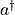
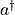
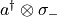
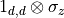
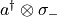
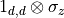
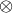
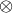

[1]:
import quanguru as qg
import numpy as np
16 - Jaynes-Cummings model of light-matter interaction¶
Before demonstrating the Jaynes-Cummings (JC) Hamiltonian in QuanGuru, we provide some background for the JC Hamiltonian in this tutorial.
The JC Hamiltonian is commonly written as

where  are raising/lowering operators for a two-level system,
are raising/lowering operators for a two-level system,  are the Pauli spin operators with
are the Pauli spin operators with  ,  and
,  and  are the creation and annihilation operators for the field mode, and
are the creation and annihilation operators for the field mode, and  ,
,  , and
, and  are the cavity-field, qubit, and coupling (angular-) frequencies, respectively. Note that the above Hamiltonian is written in a common notation where
the order of the sub-system Hilbert spaces is implicitly defined by the ordering in the coupling. This means, for example, that the composite form of the number operator is written explicitly as (similarly,  and , where
are the cavity-field, qubit, and coupling (angular-) frequencies, respectively. Note that the above Hamiltonian is written in a common notation where
the order of the sub-system Hilbert spaces is implicitly defined by the ordering in the coupling. This means, for example, that the composite form of the number operator is written explicitly as (similarly,  and , where  is the truncation dimension for the cavity operators and  is the tensor product).
is the truncation dimension for the cavity operators and  is the tensor product).
Here, the eigenstates of the qubit are
Excited state :
Ground state:
Together with the definition, we have
so that and
so that and
Finally, the matrix representations of JC Hamiltonian (with  ) for two different cases of sub-system Hilbert space orders are
) for two different cases of sub-system Hilbert space orders are

In above convention, we see that the zero-excitation state (or, in the qubit first order of sub-spaces) appears at (or, at in the qubit first order of sub-spaces) index of the matrix representation. There are some other counter-intuitive details in above convention, and an alternative convention for JC Hamiltonian is to write the qubit term with a minus () so that the excited/ground state definition is switched
Excited state :
Ground state:
However, in this alternative case, we also need to make some changes for the operators, otherwise, together with the definition, we have
so that and
so that and
Here, we could introduce some unconventional definitions for by switching the in their definition to , but we have a better alternative that is to replace and with 2-dimensional truncations of and , respectively. Then, the matrix representations of JC Hamiltonian (with ) for two different cases of sub-system Hilbert space orders are


{kind=link}
and, in the first case, we have at .
TODO: FURTHER EXPLANATIONS OF THE FIRST CASE (e.g. the 4-squares being the constant excitation sub-space)